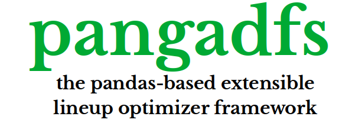

Home

pangadfs is a pandas-based (python) genetic algorithm framework for fantasy sports. It uses a plugin architecture to enable maximum flexibility while also providing a fully-functional implementation of a genetic algorithm for lineup optimization.
Documentation: https://sansbacon.github.io/pangadfs/
Source Code: https://github.com/sansbacon/pangadfs
GUI Application: https://github.com/sansbacon/pangadfs-gui
Version 0.2 Update
Starting with version 0.2, the GUI application has been separated into its own repository for better modularity and easier maintenance. The core pangadfs library now focuses purely on the optimization algorithms.
The key pangadfs features are:
- Fast: takes advantage of pandas and numpy to generate thousands of lineups quickly.
- Extensible: any desired functionality can be added with a straightforward plugin architecture.
- Pythonic: library is easy to use and extend as long as you are familiar with data analysis in python (pandas and numpy). You don't also have to be an expert in linear programming.
- Fewer bugs: Small core means fewer bugs and easier to trace code. Unlike other optimizers, pangadfs does not generate complicated equations behind the curtain that are difficult to comprehend and debug.
Requirements¶
- Python 3.8+
- pandas 1.0+
- numpy 1.19+
- stevedore 3.30+
- numpy-indexed 0.3+
Installation¶
Example¶
Create It¶
A simple pangadfs optimizer could look like the following
from pathlib import Path
from pangadfs import GeneticAlgorithm
ctx = {
'ga_settings': {
'csvpth': Path(__file__).parent.parent / 'appdata' / 'pool.csv',
'n_generations': 20,
'population_size': 30000,
'stop_criteria': 10,
'verbose': True
},
'site_settings': {
'flex_positions': ('RB', 'WR', 'TE'),
'lineup_size': 9,
'posfilter': {'QB': 14, 'RB': 8, 'WR': 8, 'TE': 5, 'DST': 4, 'FLEX': 8},
'posmap': {'DST': 1, 'QB': 1, 'TE': 1, 'RB': 2, 'WR': 3, 'FLEX': 7},
'salary_cap': 50000
}
}
# set up GeneticAlgorithm object
ga = GeneticAlgorithm()
# create pool and pospool
pop_size = ctx['ga_settings']['population_size']
pool = ga.pool(csvpth=ctx['ga_settings']['csvpth'])
posfilter = ctx['site_settings']['posfilter']
flex_positions = ctx['site_settings']['flex_positions']
pospool = ga.pospool(pool=pool, posfilter=posfilter, column_mapping={}, flex_positions=flex_positions)
# create salary and points arrays
points = pool[cmap['proj']].values
salaries = pool[cmap['salary']].values
# create initial population
initial_population = ga.populate(
pospool=pospool,
posmap=ctx['site_settings']['posmap'],
population_size=pop_size
)
# apply validators (default are salary and duplicates)
initial_population = ga.validate(
population=initial_population,
salaries=salaries,
salary_cap=ctx['site_settings']['salary_cap']
)
population_fitness = ga.fitness(
population=initial_population,
points=points
)
# set overall_max based on initial population
omidx = population_fitness.argmax()
best_fitness = population_fitness[omidx]
best_lineup = initial_population[omidx]
# create new generations
n_unimproved = 0
population = initial_population.copy()
for i in range(1, ctx['ga_settings']['n_generations'] + 1):
# end program after n generations if not improving
if n_unimproved == ctx['ga_settings']['stop_criteria']:
break
# display progress information with verbose parameter
if ctx['ga_settings'].get('verbose'):
logging.info(f'Starting generation {i}')
logging.info(f'Best lineup score {best_fitness}')
# select the population
# here, we are holding back the fittest 20% to ensure
# that crossover and mutation do not overwrite good individuals
elite = ga.select(
population=population,
population_fitness=population_fitness,
n=len(population) // ctx['ga_settings'].get('elite_divisor', 5),
method='fittest'
)
selected = ga.select(
population=population,
population_fitness=population_fitness,
n=len(population),
method='roulette'
)
# cross over the population
crossed_over = ga.crossover(population=selected, method='uniform')
# mutate the crossed over population (leave elite alone)
mutated = ga.mutate(population=crossed_over, mutation_rate=.05)
# validate the population (elite + mutated)
population = ga.validate(
population=np.vstack((elite, mutated)),
salaries=salaries,
salary_cap=ctx['site_settings']['salary_cap']
)
# assess fitness and get the best score
population_fitness = ga.fitness(population=population, points=points)
omidx = population_fitness.argmax()
generation_max = population_fitness[omidx]
# if new best score, then set n_unimproved to 0
# and save the new best score and lineup
# otherwise increment n_unimproved
if generation_max > best_fitness:
logging.info(f'Lineup improved to {generation_max}')
best_fitness = generation_max
best_lineup = population[omidx]
n_unimproved = 0
else:
n_unimproved += 1
logging.info(f'Lineup unimproved {n_unimproved} times')
# show best score and lineup at conclusion
print(pool.loc[best_lineup, :])
print(f'Lineup score: {best_fitness}')
Run it¶
Run the sample application with:
$ basicapp
INFO:root:Starting generation 1
INFO:root:Best lineup score 153.00000000000003
INFO:root:Lineup unimproved 1 times
INFO:root:Starting generation 2
INFO:root:Best lineup score 153.00000000000003
INFO:root:Lineup improved to 155.2
. . .
INFO:root:Starting generation 19
INFO:root:Best lineup score 156.3
INFO:root:Lineup improved to 156.5
INFO:root:Starting generation 20
INFO:root:Best lineup score 156.5
INFO:root:Lineup unimproved 1 times
player team pos salary proj
0 Saints NO DST 3800 9.8
34 Patrick Mahomes KC QB 8000 26.6
62 Dalvin Cook MIN RB 9500 27.2
68 Nyheim Hines IND RB 4600 15.9
72 Brian Hill ATL RB 4000 12.8
109 Gabriel Davis BUF WR 3000 10.7
136 Keelan Cole Sr. JAX WR 3600 11.9
138 Calvin Ridley ATL WR 7100 21.6
142 Justin Jefferson MIN WR 6300 20.0
Lineup score: 156.5
Extensibility¶
pangadfs is extensible by design and is motivated by difficulties I encountered with other optimizers, which tend to have a monolithic design and don't make it easy to swap out components.
This flexibility is made possible by the stevedore plugin system, which allows allow applications to customize one or more of the internal components.
As recommended by the stevedore documentation, the base module includes base classes to define each pluggable component. Each namespace has a default implementation (crossover, fitness, mutate, select, and so forth), which, collectively, provide a fully-functional implementation of a genetic algorithm.
License¶
This project is licensed under the terms of the MIT license.